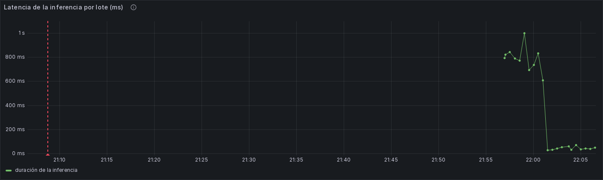
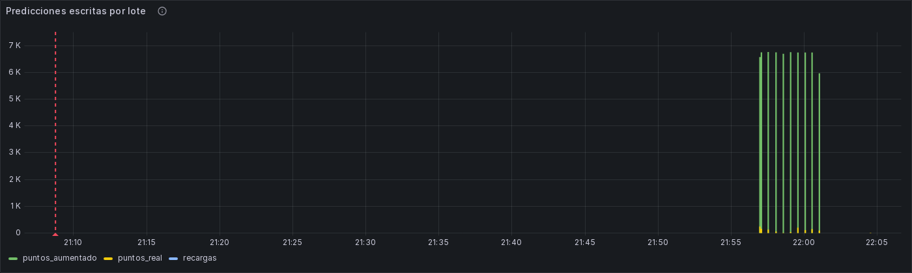

Inferencia en vivo (F7)¶
Cubre los criterios 6 (BI/ML distribuidas: predicción y KPIs en la misma sesión, CE044-N3) y 7 (modelos de series de tiempo en producción). Los modelos de F6 (d2.2, d4.1, d6.1 y d8.1) corren dentro del job de Spark, sobre el mismo flujo que alimenta los KPIs, y sus predicciones llegan al tablero BI junto a ellos.
Las reglas congeladas f4.4 y los parámetros de los modelos no se tocaron. F7 solo los lee.
Cómo fluye una predicción¶
aqua-eventos-real ─┐ batch/modelos/<dX>/<versión>/ (montado, solo lectura)
├─► consulta Spark "predicciones" ──► streaming/inferencia.py ──► InfluxDB "predicciones"
aqua-eventos- │ (foreachBatch, trigger 30 s, · Detector.nivel() congelado · bucket monitoraqua (real)
aumentados ────────┘ checkpoint propio) · estado por tanque (JSON) · monitoraqua_aumentados
· D2, D4, D6, D8 └► Grafana: tablero BI (filas
D2-D8 y "Pronóstico vs real")
- Lectura: la consulta
predicciones(streaming/procesar_stream.py) lee los dos tópicos: aqua-eventos-real: el ESP32, ThingSpeak y Open-Meteo Juliaca, que D8 usa como entrada;aqua-eventos-aumentados: la flota extrapolada, corridar2026-45facae2. La recorre una vez (172,800 lecturas, en ~9 lotes) y después queda al día.
Tiene su propio checkpoint (/checkpoints/predicciones) y no comparte estado con las demás consultas.
2. Nivel: cada lectura pasa por Detector.nivel(), el detector congelado de F4, que da el nivel en %. Respeta la
geometría de ingesta/tanques.yml y no compensa dos veces cuando el firmware ya compensa.
3. Modelos: streaming/inferencia.py carga batch/modelos/ (en el contenedor, /app/config/modelos):
| Dimensión | Versión | Archivo | Clase |
|---|---|---|---|
| D2 | d2.2-20261029 | perfil.json |
PerfilConsumo (batch/perfil_consumo.py) |
| D4 | d4.1-20261029 | modelo.json |
ModeloLlegadas (batch/llegadas.py) |
| D6 | d6.1-20261029 | modelo.json |
ModeloFuga (batch/fuga.py) |
| D8 | d8.1-20261029 | modelo.json |
ModeloTermico (batch/termico.py) |
- El código de los modelos va en la imagen (Dockerfile).
- Los parámetros se montan de
batch/modelos/. En cada lote se mira la fecha de modificación de cada archivo; si cambió, el modelo se recarga sin reiniciar el job. Queda registrado comomodelo_recargadoen el log y eninferencia.recargas. - La versión (nombre de la carpeta) va en cada predicción como tag
version_modelo. - Estado por tanque: guarda el historial mínimo que necesitan los modelos, en
/checkpoints/predicciones_estado.json: - el nivel de los últimos 15 min;
- los llenados y la edad del agua;
- las noches;
- el aire por hora y los filtros térmicos;
- los pronósticos pendientes de verificar.
Garantías:
- Orden de escritura: el estado se escribe después de InfluxDB (escrituras idempotentes: misma serie y
tiempo reemplazan el punto) y lleva el batchId.
- Lotes repetidos: si Spark repite un lote ya procesado tras un reinicio, se ignora.
- Lecturas repetidas: dentro de un tanque, una lectura con tiempo menor o igual al último procesado se descarta.
5. Escritura:
- Measurement predicciones: al bucket del origen de las lecturas, monitoraqua (real) o
monitoraqua_aumentados (flota).
- Measurement inferencia: la latencia y el volumen de cada lote, en monitoraqua.
6. Errores: un error de la inferencia no detiene el pipeline. Se registra como inferencia_error y en
inferencia.errores, se descarta el estado a medias y el lote siguiente sigue. Una primera versión sin esa
protección tumbó todas las consultas por un campo con dos tipos.
Measurement predicciones¶
Tags:
sensorId,origen(esp32-fisico,thingspeakoflota-extrapolada),origenLecturasyrunId(flota);dimension(D2, D4, D6 o D8);version_modelo;tipo, que define qué es el punto:
tipo |
Cuándo se escribe | Para qué |
|---|---|---|
estimacion |
lo que el modelo dice ahora, con el instante objetivo (objetivo_ts, o objetivo_6h_ts y objetivo_12h_ts) |
las tablas F7 de cada fila del tablero |
pronostico |
el valor pronosticado, escrito en el instante objetivo (en el futuro) | ver el pronóstico sobre el eje del tiempo |
verificacion |
cuando llega el instante objetivo y se conoce el valor real: real, pronosticado y error | el error en vivo, en la fila "Pronóstico vs real" |
motivo |
cuando el modelo no aplica a ese tanque, en vez de una cifra (una vez por hora) | que el tablero diga por qué no hay cifra |
Qué predice cada dimensión¶
| Dimensión | Cadencia | Campos de estimacion |
pronostico y verificacion |
|---|---|---|---|
| D2 autonomía (d2.2) | cada 15 min de tiempo de evento | autonomia_texto ("más de 12 h" o "x.x h"), autonomia_h (P50 del perfil, hasta 12), banda autonomia_p10_h / autonomia_p90_h calibrada ([aut_p90 / factor, aut_p10 · factor]), autonomia_consumo_medio_h (comparación), nivel_pct, advertencia en ThingSpeak ("el perfil tiende a ser optimista") |
nivel a 60 min → nivel_real_pct, nivel_pred_pct, error_pp |
| D4 próxima llegada (d4.1) | cada 15 min | horas_moda, objetivo_ts, ventana P10-P90 calibrada (ventana_ini_h, ventana_fin_h y sus _ts), prob_6h, prob_12h, prob_24h, modelo_tipo (Weibull o KM), fuente_llegadas |
en cada llegada observada: error_h = real − más probable, dentro_ventana |
| D6 fuga (d6.1) | una vez por noche, al cerrar la franja 00:00-03:30 | tasa_lph, referencia_lph, exceso_lph, p_fuga, fuga, perdida_24h_l con perdida_24h_p10_l / perdida_24h_p90_l (sin la de 7 días), complemento_de = alerta_fuga |
la noche siguiente: perdida_real_proxy_l (exceso observado × 24 h) frente a perdida_pred_l |
| D8 agua (d8.1) | cada hora cerrada | agua_c, agua_6h_c y agua_12h_c, cada uno con P10/P90, prob_cruce_bajo_12h (4 °C), prob_cruce_alto_12h (25 °C), residencia_h (o residencia_motivo), variante, advertencia |
a 6 y 12 h → agua_real_c (solo 3418755, que mide el agua), agua_pred_c, error_c |
Llegadas (D4 y D8): se detectan en el stream con el criterio de llenado de D2 y D4: la mediana de 15 min sube más de 10 puntos sobre su mínimo desde el último llenado. Es la fuente "subida sostenida" de D4, la única que ve los llenados de los canales en %.
Cuándo un modelo no aplica (tipo = motivo)¶
| Tanque | D2 | D4 | D6 | D8 |
|---|---|---|---|---|
| ESP32 | geometría provisional (por_medir) |
sin modelo de llegadas (pocas llegadas reales) | geometría provisional | aplica (DHT11 + Open-Meteo Juliaca) |
| ThingSpeak 1233810 | aplica | aplica (subida sostenida) | el canal informa nivel, no distancia | sin temperatura del aire |
| ThingSpeak 1233815 y 283977 | aplica | sin modelo de llegadas | sin distancia | sin temperatura del aire |
| ThingSpeak 3418755 (lluvia) | aplica | fuera del alcance de D4: tanque de lluvia | sin distancia | aplica, variante validada (aire field2 + Open-Meteo de su ubicación; agua real field3 para verificar) |
| ThingSpeak 480876 | sin perfil entrenado | sin modelo | sin distancia | aplica |
| Flota | aplica | aplica (por zona) | aplica | aplica (variante solo aire) |
Otros motivos:
- D4: "esperando la primera llegada observada en el stream".
- D6: "faltan noches de referencia (n de 3)", "noche no válida: hubo llenado" o "noche no válida: cobertura x %".
- D8: "edad desconocida: falta un llenado que renueve el agua" (en la residencia).
D8 por variante (OM_DE_TANQUE en streaming/inferencia.py):
| Tanque | Variante | Entradas |
|---|---|---|
| ESP32 | validada (aire de la cámara + Open-Meteo) | DHT11 + open-meteo-juliaca |
| ThingSpeak 3418755 | validada | aire dentro del tanque (field2) + open-meteo-canal3418755, su ubicación (53.45, −2.51) |
| Flota | "solo aire" | aire de la cámara simulado |
- Origen de las entradas de 3418755: el colector lee el aire del tanque (
field2→temperaturaC) y Open-Meteo de su ubicación (ingesta/estaciones.yml, sensorIdopen-meteo-canal3418755). Así D8 en vivo usa en ese canal el mismo modelo que se validó con él, y se compara con su agua real (field3). - La flota usa "solo aire": sus fechas son simuladas (28-sep a 28-oct), anteriores al Open-Meteo del stream.
- Sesgo conocido: esa variante tuvo, en la prueba de F6, MAE de 0.91 °C y sesgo de −0.87 °C (la validada:
0.16 °C y +0.13 °C), porque una sola entrada se desvía con el cambio de estación (
docs/modelo-d8.md). - En el tablero: cada estimación de la flota lo dice en
advertencia. - Cambio de variante: un tanque que cambia de variante reinicia sus filtros térmicos, porque cambia τ, y vuelve a pasar 48 h "en arranque".
- Advertencias en todas las estimaciones: "error de transferencia de 1-2 °C" y "filtro en arranque" en las primeras 48 h.
- Solo Juliaca en lo demás: los consumidores que esperan Juliaca filtran por
sensorId = open-meteo-juliaca(batch/capas.py,modelo_d6.py,modelo_d8.py, el panel de temperaturas del BI).
Tablero BI (criterio 6)¶
Las predicciones están en las mismas filas que los KPIs en vivo de cada dimensión (dashboards/generar_tableros.py):
| Fila | Panel F7 (antes reservado) | Junto a |
|---|---|---|
| D2 | F7 · Horas de autonomía (perfil de consumo): autonomía, banda, consumo medio, nivel, advertencia o motivo | nivel del tanque, geometría |
| D4 | F7 · Próxima llegada del agua: horas a la más probable, ventana, probabilidad a 6/12/24 h | llegadas y cortes, horas entre llegadas, caudal |
| D6 | F7 · Pérdida proyectada por fuga (última noche): tasa, exceso, P(fuga), pérdida a 24 h con banda | distancia cruda vs compensada, alertas de fuga |
| D8 | F7 · Agua estimada, cruce del umbral y residencia: agua ahora y a 6/12 h con banda, P(cruce), residencia | temperaturas, horas de residencia |
Fila nueva "F7 · Pronóstico vs real":
- D2: el nivel real frente al pronosticado a 60 min, y su error.
- D4: el error de la hora de llegada.
- D6: la pérdida pronosticada frente a la observada.
- D8: el agua real frente a la pronosticada (3418755).
- Leyenda: muestra el error medio y cuántos pronósticos se verificaron.
Variable sensorId: ahora incluye los tanques que solo tienen predicciones (ThingSpeak no tiene nivel_tanque).
Observabilidad (criterio 4)¶
- Tablero del pipeline, fila "Inferencia en vivo":
- Latencia de la inferencia por lote (ms): el tiempo de los modelos en cada micro-lote, con línea roja en 30 s, el trigger.
- Predicciones escritas por lote: al bucket real y al de aumentados, más las recargas de modelos.
- La consulta
prediccionestambién aparece en la fila Spark (filas de entrada y duración del lote frente a su trigger de 30 s), por el listener de F3. - Alerta nueva: "La consulta de predicciones dejó de escribir". Salta si no hay ninguna predicción en el bucket real en 30 min, durante 5 min; sin datos también es alerta. ThingSpeak llega cada ~5 min, así que 30 min sin nada es la consulta caída.

Latencia de la inferencia por lote, con la línea del trigger de 30 s.

Predicciones escritas por lote, al bucket real y al de aumentados.
Las tablas F7 de cada dimensión, con datos reales y con la flota, están al final de su página: D2, D4, D6 y D8. Evidencia completa: F7.
Verificación en vivo (2026-10-30, docs/evidencias/f7/)¶
| Qué | Resultado |
|---|---|
Predicciones en Grafana (verificacion_paneles.json) |
las 4 tablas F7 con datos en real (ESP32, ThingSpeak, con motivos donde no aplica) y en aumentado (flota). Pronóstico vs real: D2 en real y en flota; D4 y D6 en la flota |
Recarga sin reiniciar (recarga_y_reinicio.txt) |
touch de batch/modelos/d4/.../modelo.json → modelo_recargado en el lote 13; el contenedor no se reinició |
Reinicio desde el checkpoint (recarga_y_reinicio.txt) |
docker restart: misma consulta (mismo id), estado recargado (lote 13, 12 tanques), el lote 14 solo trae lecturas nuevas: no reprocesa la flota |
| Velocidad | flota completa (172,800 lecturas) en ~9 lotes de ~0.6-1.0 s de inferencia cada uno; en vivo, 30-60 ms por lote |
Alertas (alertas_estado.json) |
6 reglas con salud ok, incluida la nueva |
| Capturas | las 4 tablas F7 (real y aumentado), pronóstico vs real (D2, D4, D6) y la latencia de la inferencia |
La caída del primer despliegue no perdió lecturas (caida_sin_perdida.md):
- Checkpoints: las 7 consultas retomaron desde su checkpoint, con el mismo id.
- Bronce: completo (ESP32: 479 de ~480 lecturas en 02:40-03:20 UTC, hueco máximo de 10 s).
- Watermark: las consultas rápidas no descartaron nada.
- Lo único descartado: 98 filas tardías en
lentas_agg. Las causó el reinicio del colector (su recarga de arranque), no la caída. Esas lecturas están en bronce.
Pendiente: revisar el 31-oct las dos verificaciones que necesitan tiempo¶
| Verificación | Por qué falta | Cuándo |
|---|---|---|
| D8 contra el agua real de 3418755 | la variante validada para ese canal se desplegó el 30-oct a las 03:38 UTC; cada pronóstico se verifica 6 y 12 h después, y el filtro térmico necesita ~48 h para salir del arranque | desde las ~10:00 UTC del 30-oct; con el filtro estabilizado, el 1-nov |
| D4 con una llegada real | hace falta una llegada observada en el stream de un tanque con modelo (ThingSpeak 1233810) | la próxima llegada de agua de 1233810 |
.venv/Scripts/python infra/evidencia_f7_pendiente.py --horas 48 # -> docs/evidencias/f7/verificacion_en_vivo_<fecha>.json
D6 en lo real no tiene verificación posible: no aplica a ningún tanque real (ESP32 con geometría provisional, ThingSpeak sin distancia).
Limitaciones¶
- El estado vive en el driver (un JSON por lote): basta para decenas de tanques. Con miles, el estado por tanque
pasaría a
applyInPandasWithState, como el detector de F4. - La flota es una corrida grabada, no un flujo en vivo: sus predicciones están en las fechas simuladas (28-sep a
28-oct) del bucket
monitoraqua_aumentados. - Las llegadas de D4 se detectan con la subida sostenida, no con el detector congelado. En la flota, D4 se entrenó con las llegadas del detector; la hora de la llegada puede diferir en minutos.
- La verificación de D6 es una aproximación observable: el exceso de la noche siguiente × 24 h. No hay fugas
reales etiquetadas (
docs/modelo-d6.md). - D8 en la flota usa la variante "solo aire", con sesgo conocido de −0.9 °C en la prueba de F6. El ESP32 y 3418755 usan la validada.
Operación¶
# Desplegar (la consulta predicciones arranca sola con el job)
docker compose -f infra/compose.yml --env-file .env up -d --build --no-deps aqua-streaming
docker logs -f lambda26-aqua-streaming | grep -E 'predicciones|inferencia|modelo_recargado'
# Recargar un modelo: reemplazar o tocar su archivo en batch/modelos/ (sin reiniciar)
# Verificar los paneles
.venv/Scripts/python infra/verificar_tableros.py --json docs/evidencias/f7/verificacion_paneles.json
# Probar la inferencia fuera de Spark (mismas clases)
# streaming/inferencia.py: Inferencia(Registro("batch/modelos"), Detector(...)).procesar(filas, estado, batch_id)